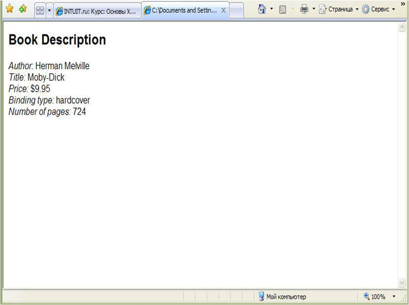
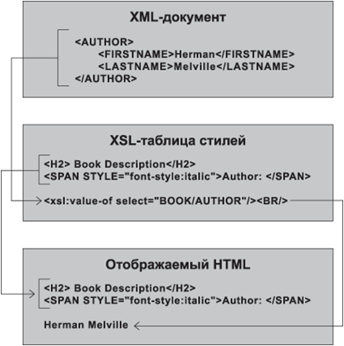
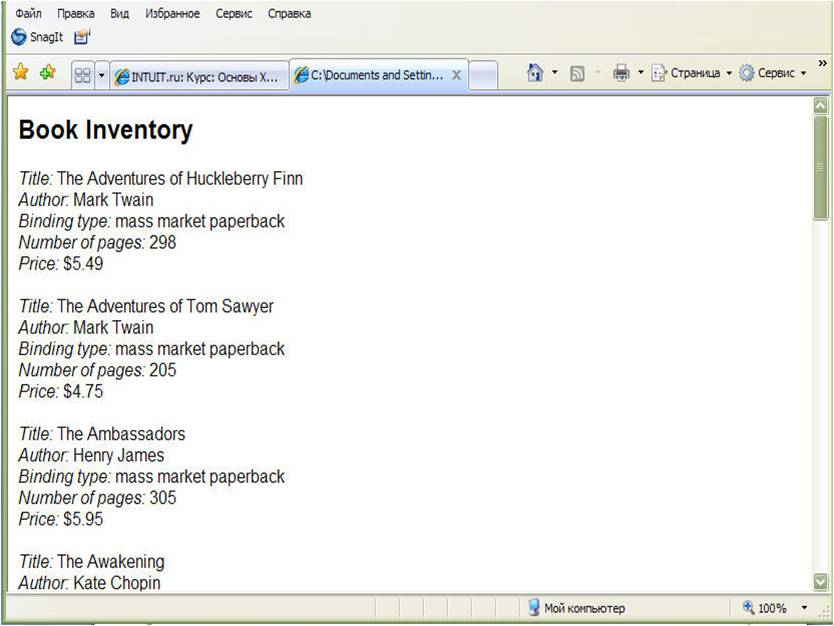
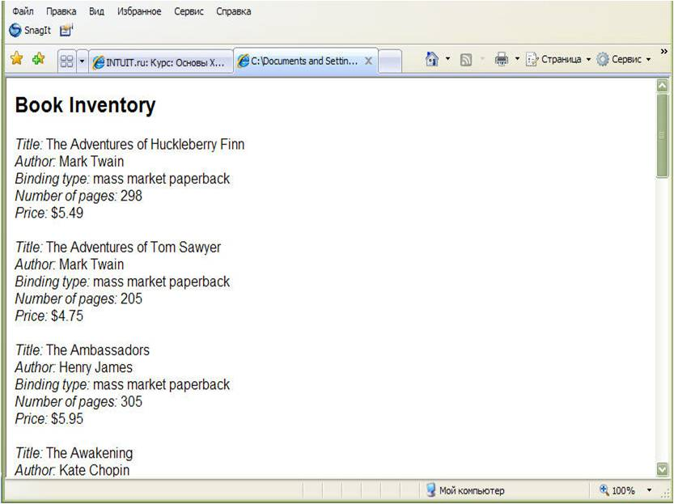
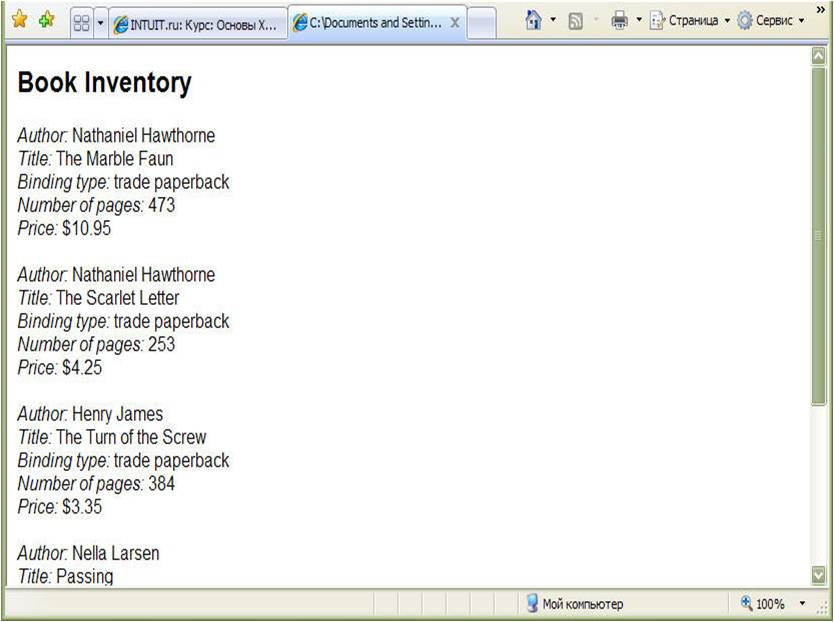
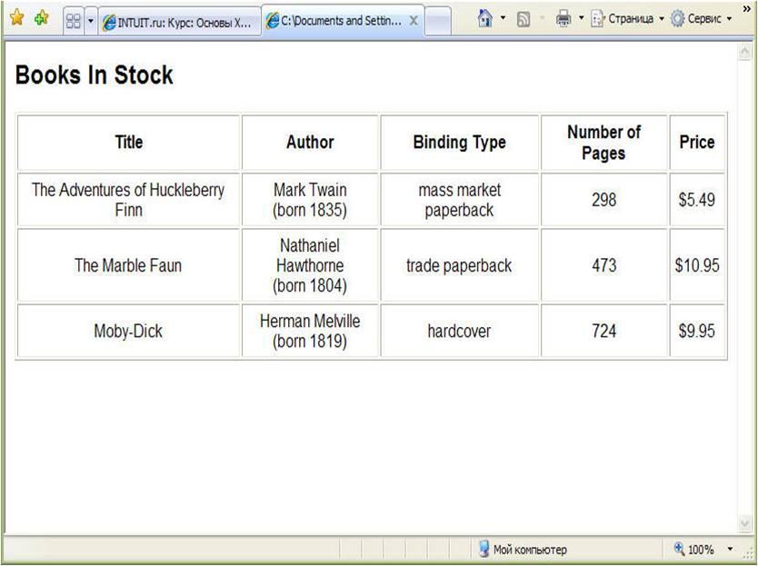

Лекция №10
Основы
использования XSL-таблиц стилей
Существуют два основных шага для
отображения XML-документа при использовании XSL-таблицы
стилей.
Создание файла XSL-таблицы стилей.
XSL является приложением XML, т. е. XSL-таблица представляет собой корректно
сформированный XML-документ, который отвечает правилам XSL. Подобно любому
XML-документу, XSL-таблица стилей содержит простой текст, и вы можете создать ее
с помощью вашего любимого текстового редактора. В последующих разделах
рассказывается, как создавать различные типы XSL-таблиц стилей.
Связывание XSL-таблицы стилей с
XML-документом. Вы можете связать XSL-таблицу стилей с XML-документом, включив в
документ инструкцию по обработке xml-stylesheet, которая имеет следующую
обобщенную форму записи:
<?xml-stylesheet type="text/xsl"
href=XSLFilePath?>
Здесь XSLFilePath представляет
собой заключенный в кавычки URL, указывающий местонахождение файла таблицы
стилей. Вы можете использовать полный URL, например:
<?xml-stylesheet
type="text/xsl"
href="http:/www.my_domain.com/Inventory.xsl"?>
Чаще используют неполный URL,
который задает местонахождение относительно месторасположения XML-документа,
содержащего инструкцию по обработке xml-stylesheet,
например:
<?xml-stylesheet type="text/xsl"
href="Inventory.xsl"?>
(Относительный URL встречается
чаще, поскольку вы обычно храните файл таблицы стилей в той же папке, где
хранится XML-документ, либо в одной из вложенных в нее
папок.)
Подсказка. Хотя
вы и можете связать XSL-таблицу стилей с использованием полного URL, таблица
стилей при этом должна размещаться на том же домене, что и XML-документ, с
которым вы ее связываете. Например, если домен http://mspress.microsoft.com/ содержит XML-документ, то
и XSL-таблица стилей должна размещаться на том же домене.
Обычно инструкция по обработке
xml-stylesheet добавляется в пролог XML-документа вслед за объявлением XML, как
вы увидите в примере XML-документа, рассматриваемого в следующем разделе (см. Листинг 10.2). Более подробная информация об
инструкциях по обработке и описании мест в документе, куда они могут быть
корректно помещены, содержится в разделе «Использование инструкций по обработке»
в лекции 4.
Если вы связали XSL-таблицу стилей
с XML-документом, вы можете открыть этот документ непосредственно в Internet
Explorer 5, и браузер отобразит XML-документ с использованием инструкций по
преобразованию, содержащихся в таблице стилей. В отличие от таблиц каскадных
стилей, если вы связываете с XML-документом более одной XSL-таблицы стилей,
браузер использует первую таблицу и игнорирует все остальные. Если вы свяжете с
XML-документом и CSS-таблицу и XSL-таблицу стилей, браузер использует только
XSL-таблицу стилей.
Примечание.
Если вы не связали XML-документ ни с CSS-таблицей, ни с XSL-таблицей стилей,
Internet Explorer 5 отобразит документ с помощью встроенной XSL-таблицы, которая
используется по умолчанию. Эта таблица стилей отображает исходный XML-текст в
виде дерева с возможностью свертывания/развертывания
уровней.
Использование
одного шаблона XSL
В отличие от CSS, содержащей
правила, XSL-таблица стилей включает один или несколько шаблонов, каждый из
которых содержит информацию для отображения в определенной ветви элементов в
XML-документе. В этом разделе вы узнаете, как создать простую XSL-таблицу
стилей, которая включает только один шаблон. Этот шаблон содержит информацию для
отображения всего документа.
В Листинге 10.1 представлен первый пример XSL-таблицы
стилей. Эта таблица стилей связана с XML-документом, представленным в Листинге 10.2.
Листинг 10.1.
XslDemo01.xsl
<?xml version="1.0"?>
<!-- Имя файла: XslDemo01.xsl
-->
<xsl:stylesheet
xmlns:xsl="http://www.w3.org/TR/WD-xsl">
<xsl:template
match="/">
<H2>Book Description</H2>
<SPAN STYLE="font-style:italic">Author:
</SPAN>
<xsl:value-of
select="BOOK/AUTHOR"/><BR/>
<SPAN STYLE="font-style:italic">Title:
</SPAN>
<xsl:value-of
select="BOOK/TITLE"/><BR/>
<SPAN STYLE="font-style:italic">Price:
</SPAN>
<xsl:value-of
select="BOOK/PRICE"/><BR/>
<SPAN STYLE="font-style:italic">Binding type:
</SPAN>
<xsl:value-of
select="BOOK/BINDING"/><BR/>
<SPAN STYLE="font-style:italic">Number of pages:
</SPAN>
<xsl:value-of select="BOOK/PAGES"/>
</xsl:template>
</xsl:stylesheet>
<!-- Имя файла: XslDemo01.xml
-->
<?xml-stylesheet type="text/xsl"
href="XslDemo01.xsl"?>
<BOOK>
<TITLE>Moby-Dick</TITLE>
<AUTHOR>
<FIRSTNAME>Herman</FIRSTNAME>
<LASTNAME>Melville</LASTNAME>
</AUTHOR>
<BINDING>hardcover</BINDING>
<PAGES>724</PAGES>
<PRICE>$9.95</PRICE>
</BOOK>
Листинг 10.2.
XslDemo01.xml
<?xml version="1.0"?>
<!-- Имя файла: XslDemo01.xml
-->
<?xml-stylesheet type="text/xsl"
href="XslDemo01.xsl"?>
<BOOK>
<TITLE>Moby-Dick</TITLE>
<AUTHOR>
<FIRSTNAME>Herman</FIRSTNAME>
<LASTNAME>Melville</LASTNAME>
</AUTHOR>
<BINDING>hardcover</BINDING>
<PAGES>724</PAGES>
<PRICE>$9.95</PRICE>
</BOOK>
На рисунке 10.1. показано, как
будет отображено в браузре.

Рис. 10.1.
Каждая XSL-таблица стилей должна
иметь элемент Документ, представленный ниже. (Напомним, что элемент Документ,
известный как корневой элемент, является XML-элементом верхнего уровня, который
содержит все остальные элементы.)
<xsl:stylesheet
xmlns:xsl="http://www.w3.org/TR/WD-xsl">
<!-- один или несколько элементов шаблона
…-->
</xsl:stylesheet>
Элемент Документ xsl:stylesheet
служит не только хранилищем других элементов, но также идентифицирует документ
как XSL-таблицу стилей. Этот элемент является одним из XSL-элементов
специального назначения, используемых в таблице стилей. Все XSL-элементы
принадлежат пространству имен xsl – т. е. вы предваряете имя каждого
XSL-элемента префиксом xsl:, обозначающим пространство имен. Вы определяете это
пространство имен в начальном теге элемента xsl:stylesheet, например, следующим
образом:
xmlns:xsl="http://www.w3.org/TR/WD-xsl"
Это определение позволяет вам
использовать пространство имен внутри элементов таблицы стилей. (Относительно
пространства имен в XML см. раздел «Вставка HTML-элементов в XML-документы и
использование пространства имен» в лекции 7.)
Элемент Документ xsl:stylesheet
XSL-таблицы стилей должен содержать один или несколько шаблонов элементов,
которые для краткости будем называть шаблонами. Элемент Документ из Листинга 10.1 содержит только один шаблон, который
имеет следующую форму:
<xsl:template match="/">
<!--
дочерние элементы …
-->
</xsl:template>
Браузер использует шаблон для
отображения определенной ветви элементов в иерархии XML-документа, с которым вы
связываете таблицу стилей. Атрибут match шаблона указывает на определенную
ветвь. (Атрибут match аналогичен селектору в правиле CSS). Значение атрибута
match носит название образца (pattern). Образец в данном примере ("/")
представляет корневой элемент всего XML-документа. Этот шаблон, таким образом,
содержит инструкции для отображения всего XML-документа.
Каждая XSL-таблица стилей должна
содержать один и только один шаблон с атрибутом match, который имеет значение
"/". Вы также можете включить один или несколько дополнительных шаблонов с
инструкциями для отображения определенных подчиненных ветвей в структуре
XML-документа; каждая из них должна иметь образец, отвечающий определенной
ветви.
Корневой образец ("/") не
представляет элемент Документ (или корневой элемент) XML-документа. Он
представляет весь документ, для которого элемент Документ является дочерним. (Т.
е. он аналогичен корневому узлу Document в объектной модели документа
DOM)
Вот полное описание шаблона из
рассматриваемой таблицы стилей:
<xsl:template match="/">
<H2>Book
Description</H2>
<SPAN
STYLE="font-style:italic">Author: </SPAN>
<xsl:value-of
select="BOOK/AUTHOR"/><BR/>
<SPAN
STYLE="font-style:italic">Title: </SPAN>
<xsl:value-of
select="BOOK/TITLE"/><BR/>
<SPAN
STYLE="font-style:italic">Price: </SPAN>
<xsl:value-of
select="BOOK/PRICE"/><BR/>
<SPAN
STYLE="font-style:italic">Binding type: </SPAN>
<xsl:value-of
select="BOOK/BINDING"/><BR/>
<SPAN
STYLE="font-style:italic">Number of pages:
</SPAN>
<xsl:value-of
select="BOOK/PAGES"/>
</xsl:template>
Шаблон содержит два вида
XML-элементов. XML-элементы, представляющие HTML-разметку. Примерами подобного
вида XML-элемента из рассматриваемой таблицы стилей являются:
<H2>Book
Description</H2>
который отображает заголовок
второго уровня,
<SPAN STYLE="font-style:italic">Author:
</SPAN>
который отображает блок текста, набранного курсивом
(Author:), <BR/>
который создает пустую
строку.
Все эти XML-элементы являются
корректно сформированными и представляют стандартные HTML-элементы. Браузер
просто копирует каждый HTML-элемент непосредственно на выход HTML, который
воспринимает и отображает их.
Подсказка.
Каждый из элементов, представляющих HTML-разметку, должен быть корректно
сформированным XML-элементом, а также стандартным HTML-элементом. (Не забывайте,
что XSL-таблица стилей является XML-документом.) Следовательно, вы не можете
использовать HTML-конструкции, которые не являются корректно сформированным XML,
такие, как элементы, состоящие только из начального тега. Например, чтобы задать
элемент перевода строки в HTML, вы не можете просто ввести <BR>, как вы
это делаете для HTML-страницы. Вместо этого вы должны использовать корректно
сформированный тег пустого XML-элемента, <BR/>.
XSL-элементы. Примеры
XSL-элементов из рассматриваемой таблицы стилей являются элементами
xsl:value-of, например:
<xsl:value-of select="BOOK/AUTHOR"/>
Браузер отличает XML-элемент от
элемента, представляющего HTML, поскольку первый имеет в качестве префикса
описание пространства имен xsl:. XSL-элементы в шаблоне не копируются на выход
HTML. Они лишь содержат инструкции по выбору и модификации данных XML, либо
используются для выполнения других задач.
XSL-элемент value-of добавляет
текстовое содержимое определенного XML-элемента – а также любых его дочерних
элементов, которые он имеет – в выходной модуль HTML, который воспринимается и
отображается браузером. Вы указываете определенный XML-элемент заданием образца,
который присваиваете атрибуту select XSL-элемента value-of. В рассмотренном выше
примере элемента value-of атрибуту select присвоен образец «BOOK/AUTHOR», что
приводит к выводу текстового содержимого элемента AUTHOR XML-документа.
Текстовое содержимое элемента AUTHOR состоит из символьных данных, принадлежащих
двум его дочерним элементам, FIRSTNAME и LASTNAME.
Обратите внимание, что XML-элемент
в образце задается с помощью оператора пути (в данном случае BOOK/AUTHOR),
который определяет местонахождение элемента в иерархии XML-документа. (Оператор
пути походит на путь к файлу, который операционная система использует для
указания местонахождения файла или папки.)
Главный момент, на который здесь
следует обратить внимание, состоит в том, что оператор пути в значении атрибута
select относится к текущему элементу. Каждый контекст внутри XSL-таблицы стилей
относится к текущему элементу. Поскольку рассматриваемый пример шаблона
относится к корневому элементу всего документа (посредством установки атрибута
match="/"), текущим «элементом» для данного шаблона является корневой элемент
документа. (В данном случае текущий элемент не обладает соответствующим
литералом, а является родителем элемента Документ.) Таким образом, внутри этого
шаблона оператор пути BOOK/AUTHOR указывает на элемент AUTHOR, вложенный в
элемент BOOK, вложенный в корневой элемент документа.
Если вы опустите атрибут select
для XSL-элемента value-of, элемент будет осуществлять вывод текстового
содержимого плюс текстовое содержимое всех дочерних элементов в текущий элемент.
(В нашем примере, поскольку текущим является корневой элемент, пропуск атрибута
select приведет к выводу всех символьных данных в
XML-документ.)
Целью представленного в
рассматриваемом примере шаблона элементов является отображение текста названия
для каждого из дочерних XML-элементов в документе (AUTHOR, TITLE, PRICE, BINDING
и PAGES) плюс текстового содержимого каждого элемента. Обратите внимание, что
порядок элементов value-of в шаблоне определяет порядок, в котором браузер
отображает эти элементы. Таким образом, даже из этой простой таблицы стилей вы
можете понять, что XSL-таблица стилей является гораздо более гибкой, чем CSS,
которая всегда отображает элементы в том порядке, в котором они следуют в
документе.
Итак, как вы могли заметить,
XSL-таблица стилей сообщает браузеру, как отобразить XML-документ путем
избирательного преобразования XML-элементов в блок HTML-разметки, который
воспринимается и отображается браузером аналогично разметке, содержащейся на
HTML-странице. Заметим, однако, что вам не нужно включать в XSL-шаблон элементы,
представляющие элементы HTML или BODY, которые являются стандартными составными
частями HTML-страницы, поскольку браузер сам эффективно их
формирует.
На рисунке 10.2 показано как браузер генерирует первую
часть блока HTML-разметки для документа и таблицы стилей из Листингов 10.1 и 10.2.

Рис.
10.2.
XML-документ
<AUTHOR>
<FIRSTNAME>Herman</FIRSTNAME
<LASTNAME>Melville</LASTNAME>
</AUTHOR>
XSL-таблица стилей
<H2>Book
Description</H2>
<SPAN
STYLE="font-style:italic">Author: </SPAN>
<xsl:value-of
select="BOOK/AUTHOR"/><BR/>
Отображаемый
HTML
<H2>Book
Description</H2>
<SPAN
STYLE="font-style:italic">Author: </SPAN>
Hermann Melville
Отображение
переменного числа элементов
В примере, рассмотренном в
предыдущем разделе (см. Листинг 10.2), XML-документ содержал только один
элемент BOOK. В случае, если документ содержит несколько элементов BOOK,
методика, с которой вы познакомились в предыдущем разделе, способна отобразить
только один из элементов. Возьмем, для примера, XML-документ, содержащий
следующий элемент Документ:
<INVENTORY>
<BOOK>
<TITLE>The
Adventures of Huckleberry Finn</TITLE>
<AUTHOR>
<FIRSTNAME>Mark</FIRSTNAME>
<LASTNAME>Twain</LASTNAME>
</AUTHOR>
<BINDING>mass market
paperback</BINDING>
<PAGES>298</PAGES>
<PRICE>$5.49</PRICE>
</BOOK>
<BOOK>
<TITLE>The
Adventures of Tom Sawyer</TITLE>
<AUTHOR>
<FIRSTNAME>Mark</FIRSTNAME>
<LASTNAME>Twain</LASTNAME>
</AUTHOR>
<BINDING>mass market
paperback</BINDING>
<PAGES>205</PAGES>
<PRICE>$4.75</PRICE>
</BOOK>
<BOOK>
<TITLE>The
Ambassadors</TITLE>
<AUTHOR>
<FIRSTNAME>Henry</FIRSTNAME>
<LASTNAME>James</LASTNAME>
</AUTHOR>
<BINDING>mass market
paperback</BINDING>
<PAGES>305</PAGES>
<PRICE>$5.95</PRICE>
</BOOK>
</INVENTORY>
Предположим, что таблица стилей,
используемая для отображения этого документа, содержит следующий
шаблон:
<xsl:stylesheet
xmlns:xsl="http://www.w3.org/TR/WD-xsl">
<xsl:template
match="/">
<H2>Book Description</H2>
<SPAN STYLE="font-style:italic">Author:
</SPAN>
<xsl:value-of
select="INVENTORY/BOOK/AUTHOR"/><BR/>
<SPAN STYLE="font-style:italic">Title:
</SPAN>
<xsl:value-of
select="INVENTORY/BOOK/TITLE"/><BR/>
<SPAN STYLE="font-style:italic">Price:
</SPAN>
<xsl:value-of
select="INVENTORY/BOOK/PRICE"/><BR/>
<SPAN STYLE="font-style:italic">Binding type:
</SPAN>
<xsl:value-of
select="INVENTORY/BOOK/BINDING"/><BR/>
<SPAN STYLE="font-style:italic">Number of pages:
</SPAN>
<xsl:value-of select="INVENTORY/BOOK/PAGES"/>
</xsl:template>
</xsl:stylesheet>
Этот шаблон использует методику,
описанную в предыдущем разделе. Обратите внимание, что образец присваиваемых
каждому атрибуту select начинается с указания элемента Документ, в данном случае
INVENTORY (например, «INVENTORY/BOOK/AUTHOR»).
Каждый образец, однако,
соответствует трем различным элементам. Например, «INVENTORY/BOOK/AUTHOR»
соответствует элементу AUTHOR для всех трех элементов BOOK. В подобной ситуации
браузер использует только первый из соответствующих элементов. Таким образом,
таблица стилей отобразит содержимое только первого элемента BOOK, как показано
на рисунке 10.3.

Рис.
10.3.
Чтобы отобразить все отвечающие
образцу элементы, следует использовать XSL-элемент for-each, который вызывает
повторный вывод для каждого из содержащихся в XML-файле элементов. XSL-таблица
стилей, представленная в Листинге 10.3, демонстрирует данную методику. Эта
таблица стилей связана с XML-документом, содержащимся в Листинге 10.4.
xml version="1.0"?>
<!-- Имя файла: XslDemo02.xsl
-->
<xsl:stylesheet
xmlns:xsl="http://www.w3.org/TR/WD-xsl">
<xsl:template
match="/">
<H2>Book Inventory</H2>
<xsl:for-each select="INVENTORY/BOOK">
<SPAN STYLE="font-style:italic">Title:
</SPAN>
<xsl:value-of select="TITLE"/><BR />
<SPAN STYLE="font-style:italic">Author:
</SPAN>
<xsl:value-of select="AUTHOR"/><BR />
<SPAN
STYLE="font-style:italic">Binding type: </SPAN>
<xsl:value-of select="BINDING"/><BR />
<SPAN STYLE="font-style:italic">Number of pages:
</SPAN>
<xsl:value-of select="PAGES"/><BR />
<SPAN STYLE="font-style:italic">Price:
</SPAN>
<xsl:value-of select="PRICE"/><P />
</xsl:for-each>
</xsl:template>
</xsl:stylesheet>
<?xml version="1.0"?>
<!-- Имя файла: XslDemo.xml
-->
<?xml-stylesheet type="text/xsl"
href="XslDemo02.xsl"?>
<INVENTORY>
<BOOK>
<TITLE>The Adventures of Huckleberry
Finn</TITLE>
<AUTHOR>
<FIRSTNAME>Mark</FIRSTNAME>
<LASTNAME>Twain</LASTNAME>
</AUTHOR>
<BINDING>mass market
paperback</BINDING>
<PAGES>298</PAGES>
<PRICE>$5.49</PRICE>
</BOOK>
<BOOK>
<TITLE>The Adventures of Tom
Sawyer</TITLE>
<AUTHOR>
<FIRSTNAME>Mark</FIRSTNAME>
<LASTNAME>Twain</LASTNAME>
</AUTHOR>
<BINDING>mass market
paperback</BINDING>
<PAGES>205</PAGES>
<PRICE>$4.75</PRICE>
</BOOK>
<BOOK>
<TITLE>The Ambassadors</TITLE>
<AUTHOR>
<FIRSTNAME>Henry</FIRSTNAME>
<LASTNAME>James</LASTNAME>
</AUTHOR>
<BINDING>mass market
paperback</BINDING>
<PAGES>305</PAGES>
<PRICE>$5.95</PRICE>
</BOOK>
<BOOK>
<TITLE>The Awakening</TITLE>
<AUTHOR>
<FIRSTNAME>Kate</FIRSTNAME>
<LASTNAME>Chopin</LASTNAME>
</AUTHOR>
<BINDING>mass market
paperback</BINDING>
<PAGES>195</PAGES>
<PRICE>$4.95</PRICE>
</BOOK>
<BOOK>
<TITLE>Billy Budd</TITLE>
<AUTHOR>
<FIRSTNAME>Herman</FIRSTNAME>
<LASTNAME>Melville</LASTNAME>
</AUTHOR>
<BINDING>mass market
paperback</BINDING>
<PAGES>195</PAGES>
<PRICE>$4.49</PRICE>
</BOOK>
<BOOK>
<TITLE>A Connecticut Yankee in King Arthur's
Court</TITLE>
<AUTHOR>
<FIRSTNAME>Mark</FIRSTNAME>
<LASTNAME>Twain</LASTNAME>
</AUTHOR>
<BINDING>mass
market paperback</BINDING>
<PAGES>385</PAGES>
<PRICE>$5.49</PRICE>
</BOOK>
<BOOK>
<TITLE>Joan of Arc</TITLE>
<AUTHOR>
<FIRSTNAME>Mark</FIRSTNAME>
<LASTNAME>Twain</LASTNAME>
</AUTHOR>
<BINDING>trade paperback</BINDING>
<PAGES>465</PAGES>
<PRICE>$6.95</PRICE>
</BOOK>
<BOOK>
<TITLE>Leaves of Grass</TITLE>
<AUTHOR>
<FIRSTNAME>Walt</FIRSTNAME>
<LASTNAME>Whitman</LASTNAME>
</AUTHOR>
<BINDING>hardcover</BINDING>
<PAGES>462</PAGES>
<PRICE>$7.75</PRICE>
</BOOK>
<BOOK>
<TITLE>The Legend of Sleepy
Hollow</TITLE>
<AUTHOR>
<FIRSTNAME>Washington</FIRSTNAME>
<LASTNAME>Irving</LASTNAME>
</AUTHOR>
<BINDING>mass market
paperback</BINDING>
<PAGES>98</PAGES>
<PRICE>$2.95</PRICE>
</BOOK>
<BOOK>
<TITLE>The Marble Faun</TITLE>
<AUTHOR>
<FIRSTNAME>Nathaniel</FIRSTNAME>
<LASTNAME>Hawthorne</LASTNAME>
</AUTHOR>
<BINDING>trade paperback</BINDING>
<PAGES>473</PAGES>
<PRICE>$10.95</PRICE>
</BOOK>
<BOOK>
<TITLE>Moby-Dick</TITLE>
<AUTHOR>
<FIRSTNAME>Herman</FIRSTNAME>
<LASTNAME>Melville</LASTNAME>
</AUTHOR>
<BINDING>hardcover</BINDING>
<PAGES>724</PAGES>
<PRICE>$9.95</PRICE>
</BOOK>
<BOOK>
<TITLE>Passing</TITLE>
<AUTHOR>
<FIRSTNAME>Nella</FIRSTNAME>
<LASTNAME>Larsen</LASTNAME>
</AUTHOR>
<BINDING>trade paperback</BINDING>
<PAGES>165</PAGES>
<PRICE>$5.95</PRICE>
</BOOK>
<BOOK>
<TITLE>The Portrait of a Lady</TITLE>
<AUTHOR>
<FIRSTNAME>Henry</FIRSTNAME>
<LASTNAME>James</LASTNAME>
</AUTHOR>
<BINDING>mass market
paperback</BINDING>
<PAGES>256</PAGES>
<PRICE>$4.95</PRICE>
</BOOK>
<BOOK>
<TITLE>Roughing It</TITLE>
<AUTHOR>
<FIRSTNAME>Mark</FIRSTNAME>
<LASTNAME>Twain</LASTNAME>
</AUTHOR>
<BINDING>mass market
paperback</BINDING>
<PAGES>324</PAGES>
<PRICE>$5.25</PRICE>
</BOOK>
<BOOK>
<TITLE>The Scarlet Letter</TITLE>
<AUTHOR>
<FIRSTNAME>Nathaniel</FIRSTNAME>
<LASTNAME>Hawthorne</LASTNAME>
</AUTHOR>
<BINDING>trade paperback</BINDING>
<PAGES>253</PAGES>
<PRICE>$4.25</PRICE>
</BOOK>
<BOOK>
<TITLE>The Turn of the Screw</TITLE>
<AUTHOR>
<FIRSTNAME>Henry</FIRSTNAME>
<LASTNAME>James</LASTNAME>
</AUTHOR>
<BINDING>trade paperback</BINDING>
<PAGES>384</PAGES>
<PRICE>$3.35</PRICE>
</BOOK>
</INVENTORY>
Шаблон в таблице стилей из Листинга 10.3 содержит следующий элемент
for-each:
<xsl:for-each select="INVENTORY/BOOK">
<SPAN
STYLE="font-style:italic">Title: </SPAN>
<xsl:value-of
select="TITLE"/><BR />
<SPAN
STYLE="font-style:italic">Author: </SPAN>
<xsl:value-of
select="AUTHOR"/><BR />
<SPAN
STYLE="font-style:italic">Binding type: </SPAN>
<xsl:value-of
select="BINDING"/><BR />
<SPAN
STYLE="font-style:italic">Number of pages:
</SPAN>
<xsl:value-of
select="PAGES"/><BR />
<SPAN
STYLE="font-style:italic">Price: </SPAN>
<xsl:value-of
select="PRICE"/><P />
</xsl:for-each>
Элемент for-each выполняет две
основные задачи:
-
осуществляет вывод блока
элементов, содержащихся внутри элемента for-each, повторяя его для каждого
XML-элемента в документе, отвечающего образцу, присвоенному атрибуту select
элемента for-each. В данном примере цикл выполняется по одному разу для каждого
элемента BOOK, найденного в элементе Документ с именем INVENTORY. Образец,
присваиваемый атрибуту select, работает точно так же, как образец, присваиваемый
атрибуту select элемента value-of;
-
внутри элемента for-each
задает текущий элемент, устанавливаемый атрибутом select элемента for-each
(/INVENTORY/BOOK в нашем примере указывает на элемент BOOK внутри элемента
INVENTORY, входящего в корневой элемент документа) следующим образом:
<xsl:stylesheet
xmlns:xsl=http://www.w3.org/TR/WD-xsl>
<xsl:template match="/">
<!-- Здесь текущим является корневой
"элемент"
документа, "/".
-->
<xsl:for-each
select="INVENTORY/BOOK">
<!-- Здесь текущим является элемент /INVENTORY/BOOK.
-->
</xsl:for-each>
</xsl:template>
</xsl:stylesheet>
Аналогично, внутри элемента
for-each каждый дочерний элемент может быть выбран путем задания образца,
содержащего только имя элемента, например:
<xsl:value-of select="TITLE"/>
Использование
нескольких шаблонов
Другой способ отображения
повторяющихся XML-элементов состоит в создании отдельного шаблона для каждого
элемента с последующим вызовом этого шаблона с использованием XSL-элемента
apply-templates. Пример использования подобной методики приведен в XSL-таблице
стилей, представленной в Листинге 10.5. Эта таблица стилей предназначена для
связывания с XML-документом из Листинга 10.4, XslDemo.xml; установить эту связь вы
можете путем модификации инструкции xml-stylesheet в документе следующим
образом:
Листинг 10.5.
XslDemo03.xsl
<?xml version="1.0"?>
<!-- Имя файла: XslDemo03.xsl
-->
<xsl:stylesheet
xmlns:xsl="http://www.w3.org/TR/WD-xsl">
<xsl:template
match="/">
<H2>Book Inventory</H2>
<xsl:apply-templates select="INVENTORY/BOOK"
/>
</xsl:template>
<xsl:template
match="BOOK">
<SPAN STYLE="font-style:italic">Title:
</SPAN>
<xsl:value-of select="TITLE"/><BR/>
<SPAN STYLE="font-style:italic">Author:
</SPAN>
<xsl:value-of select="AUTHOR"/><BR/>
<SPAN STYLE="font-style:italic">Binding type:
</SPAN>
<xsl:value-of select="BINDING"/><BR/>
<SPAN STYLE="font-style:italic">Number of pages:
</SPAN>
<xsl:value-of select="PAGES"/><BR/>
<SPAN STYLE="font-style:italic">Price:
</SPAN>
<xsl:value-of select="PRICE"/><P/>
</xsl:template>
</xsl:stylesheet>
Рассматриваемая в примере таблица
стилей содержит два шаблона. Один шаблон содержит инструкции для отображения
всего документа (путем установки match="/", указывающей на корневую часть
документа). Все XSL-таблицы стилей требуют наличия такого шаблона. Другой шаблон
содержит инструкции для отображения элемента BOOK (шаблон с установкой match=
«BOOK»). Сначала браузер обрабатывает шаблон, соответствующий корневой части
элемента:
<xsl:template
match="/">
<H2>Book
Inventory</H2>
<xsl:apply-templates select="INVENTORY/BOOK"
/>
</xsl:template>
XSL-элемент apply-templates сообщает браузеру, что
для каждого элемента BOOK внутри корневого элемента INVENTORY он должен обрабатывать
шаблон, отвечающий элементу BOOK – т. е. шаблон, для атрибута match которого установлено значение "BOOK". Таблица стилей включает следующий шаблон, отвечающий
элементу BOOK:
<xsl:template
match="BOOK">
<SPAN
STYLE="font-style:italic">Title: </SPAN>
<xsl:value-of
select="TITLE"/><BR/>
<SPAN
STYLE="font-style:italic">Author: </SPAN>
<xsl:value-of
select="AUTHOR"/><BR/>
<SPAN
STYLE="font-style:italic">Binding type: </SPAN>
<xsl:value-of
select="BINDING"/><BR/>
<SPAN
STYLE="font-style:italic">Number of pages:
</SPAN>
<xsl:value-of
select="PAGES"/><BR/>
<SPAN
STYLE="font-style:italic">Price: </SPAN>
<xsl:value-of
select="PRICE"/><P/>
</xsl:template>
Поскольку этот шаблон отвечает
элементу BOOK, элемент BOOK является текущим элементом в контексте шаблона. В
связи с этим доступ к дочерним элементам BOOK осуществляется посредством
образца, содержащего только имя элемента, как в нашем
примере:
<xsl:value-of select="TITLE"/>
Примечание.
Если вы не укажете атрибут select для элемента apply-templates, браузер
обрабатывает соответствующий шаблон (если он имеется) для каждого дочернего
элемента текущего элемента. В рассматриваемом примере элемента apply-templates
единственным дочерним элементом для текущего элемента (корневая часть документа)
является элемент INVENTORY, который не имеет соответствующего шаблона. Таким
образом, если вы опустите атрибут select, никакие данные не будут
выведены.
Браузер обрабатывает шаблон BOOK
один раз для каждого элемента BOOK, отображая всю информацию о книгах, имеющуюся
в документе, как показано на рисунке 10.5.

Рис 10.5
Фильтрация и
сортировка данных XML
В последующих двух разделах вы
познакомитесь с основами применения XSL-таблиц стилей для фильтрации и
сортировки данных XML. После этого вам будут представлены примеры таблиц стилей,
демонстрирующие методики фильтрации и сортировки.
Фильтрация
Значение, которое присваивается
атрибутам match или select, представляет собой образец, соответствующий одному
или нескольким элементам в XML-документе. (Атрибут match используется для
элемента template, а атрибут select – для элементов value-of, for-each и
apply-templates.) Образцы, с которыми вы имели дело до сих пор, содержали только
оператор пути, который задавал имя элемента и, возможно, одного или нескольких
вложенных элементов. Вы можете ограничить количество элементов, отвечающих
шаблону, введя фильтр – выражение, заключенное в квадратные скобки ([]) и
следующее непосредственно оператором пути. Например, образец, присвоенный
следующему атрибуту match, указывает, что соответствующий элемент должен носить
имя BOOK, и кроме того (это определяется фильтром), должен иметь дочерний
элемент BINDING, который содержит текст «trade paperback»:
<xsl:template match="BOOK[BINDING='trade
paperback']">
Если в фильтр включено только имя
элемента, то соответствующий элемент должен иметь дочерний элемент с указанным
именем. Например, следующий образец отвечает любому элементу ITEM, имеющему
дочерний элемент с именем CD, независимо от содержимого элемента
CD:
match="ITEM[CD]"
Следующий образец отвечает любому
элементу SHIRT, имеющему дочерний элемент COLOR, содержащий текст
«red»:
match="SHIRT[COLOR='red']"
А следующий образец, наоборот,
отвечает любому элементу SHIRT, имеющему дочерний элемент COLOR, который не
содержит текст «red»:
select="SHIRT[COLOR='red']"
Примечание. Если элемент имеет более одного дочернего элемента с
именем, указанным в условии фильтрации, оператор сравнения применяется только к
первому дочернему элементу. Например, если элемент SHIRT имеет два дочерних
элемента COLOR, образец «SHIRT[COLOR='red']» будет отвечать элементу, только
если первый элемент COLOR содержит слово «red».
Сортировка
В этой лекции вы уже познакомились
с двумя элементами, которые вы можете использовать для обработки повторяющихся
элементов: for-each и apply-templates. Вы можете использовать атрибут order-by
для этих элементов, чтобы управлять порядком, в котором браузер обрабатывает
элементы, тем самым осуществляя сортировку данных XML.
Вы можете назначать атрибуту
order-by один или несколько образцов, разделяя их точкой с запятой. Браузер
будет сортировать элементы с использованием образцов в том порядке, в котором
они перечислены. Для указания направления сортировки (по возрастанию или по
убыванию) следует предварить образец префиксом + или – .
Например, атрибут order-by,
установленный для следующего элемента for-each, предписывает браузеру
сортировать элементы BOOK по фамилиям авторов в порядке возрастания, а также
осуществлять сортировку для одинаковых фамилий по именам, также по
возрастанию:
<xsl:for-each select="INVENTORY/BOOK"
order-by="+AUTHOR/LASTNAME;
+AUTHOR/FIRSTNAME">
В другом примере следующая
установка order-by осуществляет сортировку элементов BOOK по названиям книг по
убыванию:
<xsl:apply-templates select="INVENTORY/BOOK"
order-by="-TITLE">
Оператор пути, который вы
присваиваете атрибуту order-by, действует относительно образца, назначенного
атрибуту select. Так, в данном примере установка order-by= «-TITLE» указывает на
элемент TITLE внутри элемента BOOK, вложенного в элемент INVENTORY.
Пример
таблицы стилей, осуществляющей фильтрацию и сортировку
В этом разделе приведено два
примера XSL-таблиц стилей, представленных в Листингах 10.6 и 10.7. Каждый из них осуществляет фильтрацию и
сортировку элементов BOOK, подлежащих отображению.
Листинг 10.6. Xsldemo04.xsl
<?xml
version="1.0"?>
<!-- Имя файл: XslDemo04.xsl
-->
<xsl:stylesheet
xmlns:xsl="http://www.w3.org/TR/WD-xsl">
<xsl:template
match="/">
<H2>Book Inventory</H2>
<xsl:for-each
select="INVENTORY/BOOK[BINDING='trade paperback']"
order-by="+AUTHOR/LASTNAME; +AUTHOR/FIRSTNAME">
<SPAN STYLE="font-style:italic">Author:
</SPAN>
<xsl:value-of select="AUTHOR"/><BR />
<SPAN STYLE="font-style:italic">Title:
</SPAN>
<xsl:value-of select="TITLE"/><BR />
<SPAN STYLE="font-style:italic">Binding type:
</SPAN>
<xsl:value-of select="BINDING"/><BR />
<SPAN STYLE="font-style:italic">Number of pages:
</SPAN>
<xsl:value-of select="PAGES"/><BR />
<SPAN STYLE="font-style:italic">Price:
</SPAN>
<xsl:value-of select="PRICE"/><P />
</xsl:for-each>
</xsl:template>
</xsl:stylesheet>
<?xml version="1.0"?>
<!-- Имя файл: XslDemo05.xsl
-->
<xsl:stylesheet
xmlns:xsl="http://www.w3.org/TR/WD-xsl">
<xsl:template
match="/">
<H2>Book Inventory</H2>
<xsl:apply-templates select="INVENTORY/BOOK"
order-by="+AUTHOR/LASTNAME; +AUTHOR/FIRSTNAME"/>
</xsl:template>
<xsl:template
match="BOOK[BINDING='trade paperback']">
<SPAN STYLE="font-style:italic">Author:
</SPAN>
<xsl:value-of select="AUTHOR"/><BR />
<SPAN STYLE="font-style:italic">Title:
</SPAN>
<xsl:value-of select="TITLE"/><BR />
<SPAN STYLE="font-style:italic">Binding type:
</SPAN>
<xsl:value-of select="BINDING"/><BR />
<SPAN STYLE="font-style:italic">Number of pages:
</SPAN>
<xsl:value-of select="PAGES"/><BR />
<SPAN STYLE="font-style:italic">Price:
</SPAN>
<xsl:value-of select="PRICE"/><P />
</xsl:template>
</xsl:stylesheet>
Обе таблицы стилей разработаны для
связывания с XML-документом из Листинга 10.4 (XslDemo.xml). В них использован
следующий фильтр, предписывающий браузеру отображать только книги, имеющие
прошитый бумажный переплет (trade paperback):
[BINDING='trade
paperback']
В обоих примерах используется
следующая установка order-by, задающая сортировку элементов BOOK по возрастанию
по фамилиям авторов, а затем по именам авторов:
order-by="+AUTHOR/LASTNAME; +AUTHOR/FIRSTNAME"
На рисунке 10.6 показано как выглядит первая часть
выводимой информации, которая является одинаковой для обеих таблиц
стилей.

Рис. 10.6.
Таблица стилей из Листинга 10.6 использует элемент for-each для
отображения множества элементов BOOK. В приведенной ниже таблице стилей для
элемента for-each установлены и фильтр, и атрибут
order-by:
<xsl:for-each
select="INVENTORY/BOOK[BINDING='trade paperback']"
order-by="+AUTHOR/LASTNAME; +AUTHOR/FIRSTNAME">
<!-- отображение текущего элемента BOOK
-->
</xsl:for-each>
Таблица стилей из Листинга 10.7 использует для отображения множества
элементов BOOK элемент apply-templates вместе с отдельными шаблонами,
отвечающими элементам «BOOK». В этой таблице стилей фильтр добавлен к шаблону,
соответствующему элементам BOOK:
<xsl:template match="BOOK[BINDING='trade
paperback']">
Добавление фильтра к элементу
apply-templates будет иметь тот же эффект.
Атрибут order-by может быть
добавлен к элементу apply-templates следующим образом:
<xsl:apply-templates select="INVENTORY/BOOK"
order-by="+AUTHOR/LASTNAME; +AUTHOR/FIRSTNAME"/>
Атрибут order-by следует добавить
к элементу apply-templates, поскольку элемент template не распознает этот
атрибут.
Доступ к
атрибутам XML
XSL трактует атрибут,
принадлежащий элементу в XML-документе, как дочерний элемент. Однако для ссылки
на атрибут в образце XSL вы должны предварить имя атрибута символом @, что
указывает на то, что имя относится к атрибуту, а не к
элементу.
Например, фильтр в следующем
начальном теге выделяет все элементы BOOK с атрибутом InStock, имеющем значение
«yes». Другими словами, он выбирает только книги, которые имеются в
наличии:
<xsl:for-each
select="INVENTORY/BOOK[@InStock='yes']">
Вы можете использовать XSL-элемент
value-of для извлечения значений атрибута точно так же, как вы это делаете для
извлечения текстового содержимого элемента. Например, следующий элемент value-of
получает значение атрибута Born, принадлежащего элементу
AUTHOR:
<xsl:value-of select="AUTHOR/@Born"/>
Таблица стилей, представленная в
Листинге 10.8, демонстрирует технику доступа к
атрибутам, принадлежащим элементам в XML-документе. Эта таблица стилей связана с
XML-документом из Листинга 10.9 и отображает все имеющиеся в наличии
книги из каталога.
<?xml
version="1.0"?>
<!-- Имя файла: XslDemo06.xsl
-->
<xsl:stylesheet
xmlns:xsl="http://www.w3.org/TR/WD-xsl">
<xsl:template
match="/">
<H2>Books In Stock</H2>
<TABLE BORDER="1" CELLPADDING="5">
<THEAD>
<TH>Title</TH>
<TH>Author</TH>
<TH>Binding Type</TH>
<TH>Number of Pages</TH>
<TH>Price</TH>
</THEAD>
<xsl:for-each
select="INVENTORY/BOOK[@InStock='yes']">
<TR ALIGN="CENTER">
<TD>
<xsl:value-of select="TITLE"/>
</TD>
<TD>
<xsl:value-of select="AUTHOR"/> <BR/>
(born <xsl:value-of select="AUTHOR/@Born"/>)
</TD>
<TD>
<xsl:value-of select="BINDING"/>
</TD>
<TD>
<xsl:value-of select="PAGES"/>
</TD>
<TD>
<xsl:value-of select="PRICE"/>
</TD>
</TR>
</xsl:for-each>
</TABLE>
</xsl:template>
</xsl:stylesheet>
<?xml version="1.0"?>
<!-- Имя файла: XslDemo06.xml
-->
<?xml-stylesheet type="text/xsl"
href="XslDemo06.xsl"?>
<INVENTORY>
<BOOK
InStock="yes">
<TITLE>The Adventures of Huckleberry
Finn</TITLE>
<AUTHOR Born="1835">Mark Twain</AUTHOR>
<BINDING>mass market
paperback</BINDING>
<PAGES>298</PAGES>
<PRICE>$5.49</PRICE>
</BOOK>
<BOOK
InStock="no">
<TITLE>Leaves of Grass</TITLE>
<AUTHOR Born="1819">Walt
Whitman</AUTHOR>
<BINDING>hardcover</BINDING>
<PAGES>462</PAGES>
<PRICE>$7.75</PRICE>
</BOOK>
<BOOK
InStock="yes">
<TITLE>The Marble Faun</TITLE>
<AUTHOR Born="1804">Nathaniel
Hawthorne</AUTHOR>
<BINDING>trade paperback</BINDING>
<PAGES>473</PAGES>
<PRICE>$10.95</PRICE>
</BOOK>
<BOOK
InStock="yes">
<TITLE>Moby-Dick</TITLE>
<AUTHOR Born="1819">Herman
Melville</AUTHOR>
<BINDING>hardcover</BINDING>
<PAGES>724</PAGES>
<PRICE>$9.95</PRICE>
</BOOK>
</INVENTORY>
Каждый элемент BOOK в
XML-документе содержит атрибут InStock, имеющий значение «yes» или «no»,
указывающий наличие или отсутствие книги в хранилище. Каждый элемент AUTHOR
имеет атрибут Born, содержащий год рождения автора.
Вместо отображения значения
атрибута InStock таблица стилей использует атрибут в условии фильтрации с целью
избежать отображения элементов BOOK для книг, которых нет в
наличии:
<xsl:for-each
select="INVENTORY/BOOK[@InStock='yes']">
<!-- отображение каждого элемента BOOK
-->
</xsl:for-each>
Таблица стилей отображает каждый
элемент BOOK в виде HTML-таблицы, а не через список элементов SPAN, как в
предыдущих примерах. Она отображает значение атрибута Born после значения
элемента AUTHOR, используя XSL-элемент value-of. Следующие элементы создают
ячейку таблицы для отображения этих значений:
<TD>
<xsl:value-of
select="AUTHOR"/> <BR/>
(born
<xsl:value-of select="AUTHOR/@Born"/>)
</TD>

Рис. 10.7.